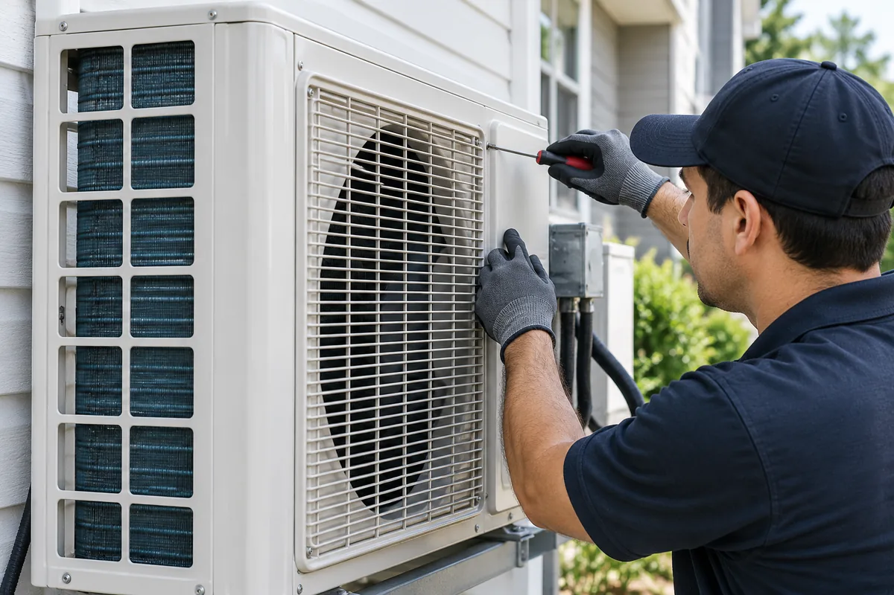
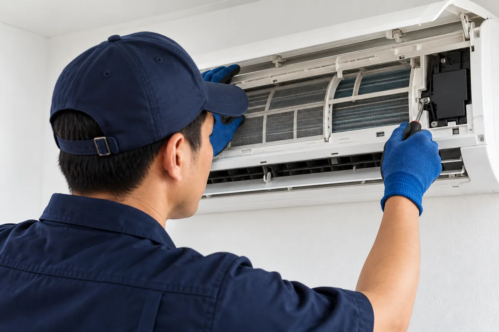
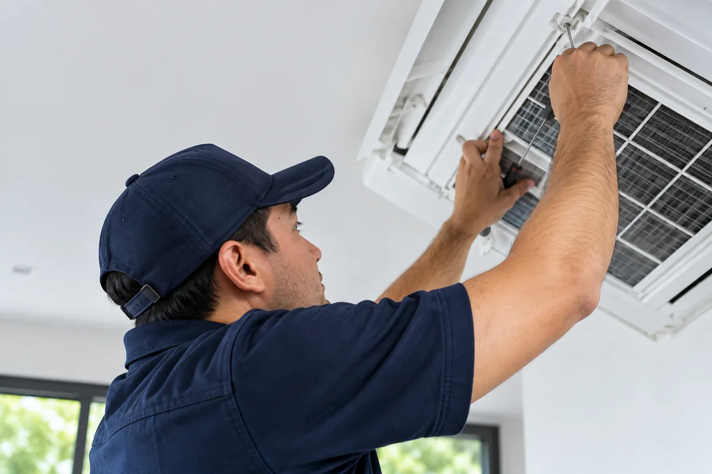
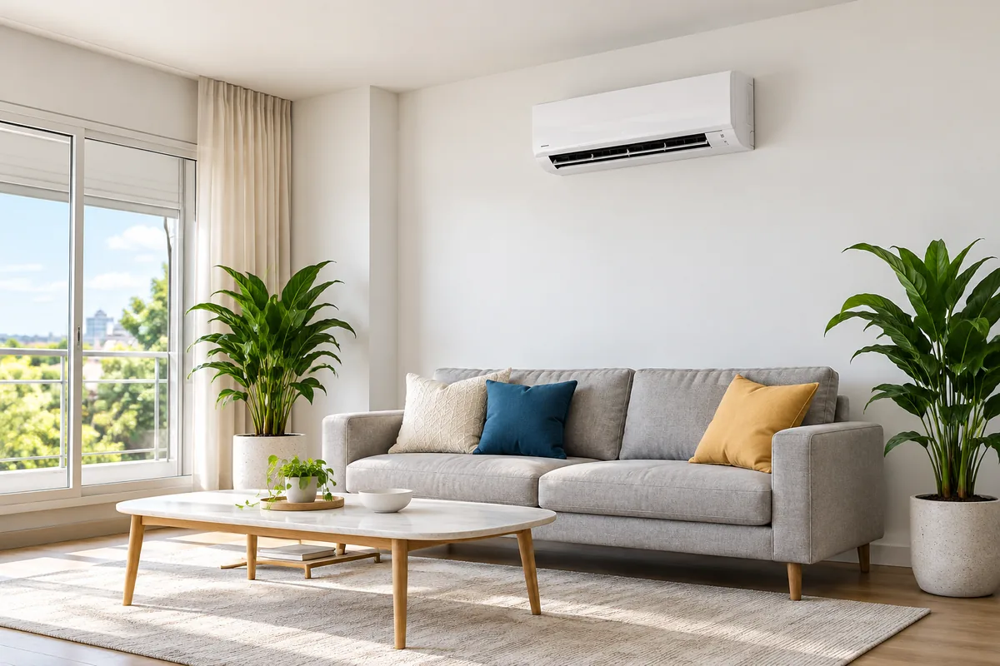

01
Tell Us
Call or WhatsApp us with the unit type and what it is doing.
Gas Top-Up
An aircond that runs all day but blows cool rather than cold air is often low on refrigerant gas.
The gas works in a sealed loop and does not get used up, so a low level means a leak at a joint, a valve or a coil. We find the leak, repair it and top up the correct gas to the pressure the manufacturer sets.

Signs
Low gas and a dirty coil can feel the same from the room, so we check the airflow before we connect the gauges.
How We Top Up
Topping up without fixing the leak only buys a few weeks of cooling. We repair the leak so the new gas stays in the system.
How It Works
From the first message to the final cooling check, you know what happens next.
Call or WhatsApp us with the unit type and what it is doing.

02Our technician checks the unit and explains the findings on the spot.
You get the price in writing, and work starts only once you agree.

04We finish the work and measure the air temperature before we leave.

FAQs
No. The gas runs in a sealed loop, so a unit without a leak keeps its gas for its whole life. A unit that needs gas often still has a leak that nobody has repaired.
No. Each unit runs on one type of refrigerant, shown on the label of the outdoor unit. Mixing gases reduces cooling and can damage the compressor.
No. A dirty filter or coil gives the same weak cooling, and a general service fixes that at a lower cost. We check the airflow and the coil before we connect the gauges.
More Services
Filter wash, coil clean and drain flush that bring back strong, cold airflow.
Learn More →Fault finding and repair for units that stop cooling, leak water or trip the power.
Learn More →Supply and fitting for wall-mounted and cassette units, with neat piping and trunking.
Learn More →Call or WhatsApp +60 16-821 0460
and book a visit in Skudai or Johor Bahru.